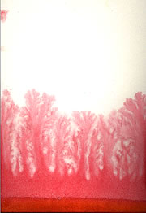

| Overnight Painting Machine | |
 |
The red watercolor (mostly alizarin crimson, but I may have added some yellow) worked great! The dark area at the bottom of the image is where the paper rested in the liquid. Curiously, the fronts and backs of the paintings are very different. Usually, the image goes much further up on one side than the other. I think this is because the paper leans when it is lowered into the liquid.
|